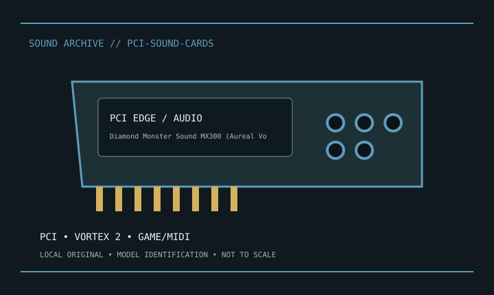

[ INDIVIDUAL MODEL // SOUND HARDWARE ]
Diamond Monster Sound MX300 (Aureal Vortex 2)
32-bit PCI card with Aureal Vortex 2 3D audio processing; analog jacks and game/MIDI port follow MX300 board/manual.

Model-specific specifications
| Exact model / scope | Diamond Monster Sound MX300 (Aureal Vortex 2). Photograph board revision and any daughterboard. Preserve known-working Diamond/Aureal legacy drivers; modern compatibility is not guaranteed. |
|---|---|
| Bus / host | Conventional PCI. |
| Documented functions / connectors | 32-bit PCI card with Aureal Vortex 2 3D audio processing; analog jacks and game/MIDI port follow MX300 board/manual. |
| Conversion / formats | Digital rates and driver modes are model-specific; consult the linked manufacturer manual. |
| Drivers / OS | Use the linked model-specific manufacturer support/manual page. Driver and supported OS availability depends on release; no undocumented OS compatibility is asserted. |
| Power / microphone | No 48 V XLR supply unless explicitly noted for a bundled external module. |
Compatibility & preservation
Photograph board revision and any daughterboard. Preserve known-working Diamond/Aureal legacy drivers; modern compatibility is not guaranteed.
- Photograph model/revision, connectors and included accessories before service.
- Retain the matching manual, driver/firmware and known-working host/routing configuration.
- Follow documented signal levels, connector pinout and power requirements; physical fit alone is not compatibility.
Manufacturer sources
- Manufacturer product information — Diamond Monster Sound MX300 (Aureal Vortex 2)Product/model source; match the exact revision and board.
- Manufacturer support and documentationOfficial model documentation, drivers and OS compatibility information.